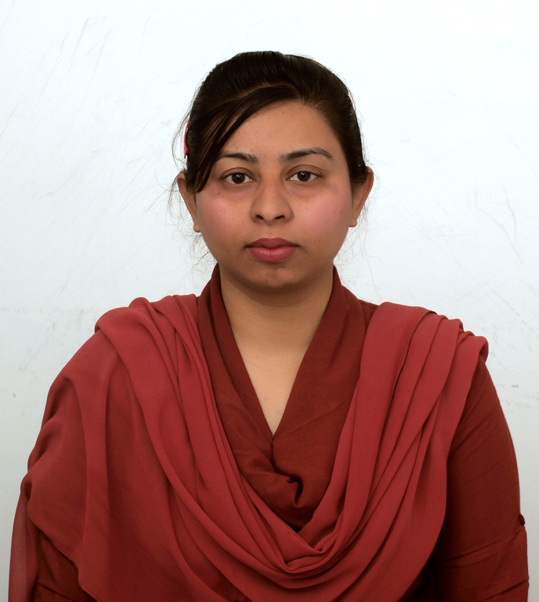

Welcome to my academic and professional portfolio website.
I am a climate scientist with over 10 years of international research and professional experience in climate variability, atmospheric processes, environmental systems, geospatial analytics, and climate resilience.
My expertise includes Climate Change, Disaster Risk Reduction (DRR), GIS, Remote Sensing, Multi-Hazard Vulnerability and Risk Assessment (MHVRA), environmental research, and climate resilience planning.
Currently serving as Deputy Manager (Climate Sciences) at NDMA Pakistan.
View Publications